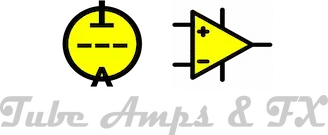
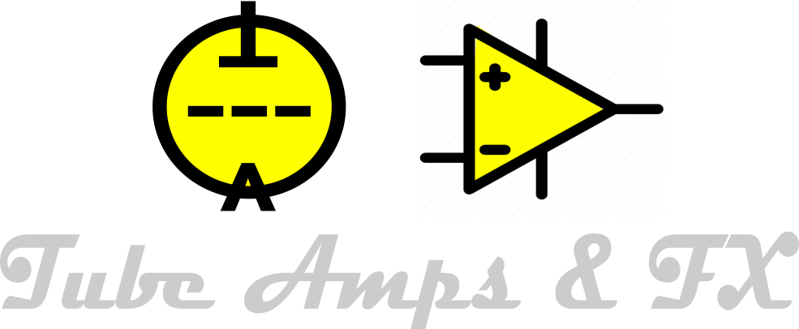

Tube Amps & FX

Comunidade maker de áudio analógico
Explorar artigos
Dúvidas? Sugestões? Entre em CONTATO com a gente no nosso Grupo do Whatsapp:
Nosso Canal no YouTube:
CONTATO
Comunidade aberta e colaborativa
tubeamps @ duck.com
GitHub Pages
GitHub Pages
Este projeto é mantido de forma independente e sem fins comerciais.